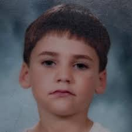

mount



Mount, nome artístico de Gabriel Montresor, é um dos streamers mais populares da cena brasileira de internet. Nascido em 29 de janeiro de 1999, na cidade de São Paulo, ele começou a produzir conteúdo ainda em 2016, como um hobby, e hoje é uma das figuras mais conhecidas e queridas da Twitch nacional.
Antes de se firmar como streamer, Mount já publicava vlogs sobre saídas com amigos, também criadores de conteúdo, um formato que ficou bastante marcante entre seus fãs. Durante a pandemia, além de expandir sua presença online, ele cursou e se formou em Publicidade e Propaganda, conciliando os estudos com o crescimento de sua carreira digital.
Atualmente, Mount é reconhecido principalmente por suas lives de Just Chatting, nas quais conversa livremente com o chat, compartilha histórias, faz reações a vídeos e assuntos variados, e cria momentos espontâneos e descontraídos. Suas transmissões acontecem de segunda a sexta, por volta das 15h30 (horário de Brasília), e ele mantém uma comunidade fiel que acompanha suas lives diariamente.
Hoje vinculado à organização FURIA, Mount se destaca não apenas pelo alcance de seu conteúdo, mas pela proximidade genuína que construiu com seu público ao longo dos anos. Seu estilo despretensioso e sua constância ajudaram a consolidá-lo como um dos nomes mais relevantes do streaming brasileiro atual.